Getting Started
Hush Line is a free and open-source, anonymous-tip-line-as-a-service for organizations or individuals. It's intended for journalists and newsrooms to offer a public tip line; by educators and school administrators to provide students with a safe way to report potentially sensitive information, or employers, Board rooms, and C-suites for anonymous employee reporting.
Contents

Software
1. Tor Browser
Your Hush Line has the option to only be reachable via the Tor Browser. It's not only the most private but also the easiest to set up and deploy.

2. Gmail
We'll use Gmail for its high reliability. If you don't already have an account, create one. Having an email address separate from your personal account is a good practice.
3. Mailvelope
To decrypt Hush Line messages, we'll use Mailvelope, which integrates with Gmail, adding PGP functionality; add the extension to Firefox or Chrome.

Open the extension in your browser and click "Let's Start."

Creating Keys
What is PGP? Let's use a non-technical metaphor
Here's how I like to think of PGP: Once set up, you'll have a very special envelope where people can put their messages inside. These envelopes are so special that they can only be opened by one specific letter opener.
Now let's say we want to receive secret messages from your friend Bob. First, you give Bob plenty of your special envelopes. (We do not give Bob the letter opener since you don't want Bob to be able to open mail intended for you.) Bob writes his message, places it in one of your envelopes, and sends it to you. When you receive the sealed envelope, you use your letter opener to open it, confident that no one else can read its contents along the way.
4. Create your keys
To create our envelopes and letter opener, we're going to use our Mailvelope extension.
Click on "Generate Keys." Give your key a name, enter your Gmail address, and create a strong password.


5. Verify your email address
Before using your key, you'll have to verify your email address. Look for a message from Mailvelope Key Server in your Gmail inbox.

The message is encrypted, and when opened, you'll be prompted for your Mailvelope password to read the email. After entering your password, click the link.

6. Copy your PGP key
After confirming that your email was verified, click on the supplied URL.

Your PGP Key is in the grey box, beginning with -----BEGIN PGP PUBLIC KEY BLOCK----- and ending with -----END PGP PUBLIC KEY BLOCK-----. Copy your entire key into a notepad for easy access.


SMTP Settings and App Passwords
Hush Line has a mail server installed to send encrypted messages to your email address. You'll need SMTP information, as well as a password. You should never use your primary account password; instead, create app-specific passwords. These are purpose-made for single applications.
Gmail SMTP
- Server:
smtp.gmail.com - Port:
587or465
Riseup.net SMTP
- Server:
mail.riseup.net - Port:
587or465
7. Create an app password
From your Gmail account, click on your avatar to access your account-level options. Select Manage Google Account.

Next, click on the Security tab on the left, then scroll to the bottom of the page to find App Passwords.


Click on App Passwords, then enter a name, then click Create. A dialog will pop up with your app-specific password. Copy it to a notepad for easy access.


🎉 Congratulations, you're now ready to install Hush Line!
Hush Line Threat Model
Introduction
Hush Line is a secure communication platform designed with a strong focus on privacy and anonymity. This document outlines the threat model for Hush Line, highlighting potential threats, the data Hush Line collects, how it is secured, and what users can expect in terms of privacy and security.
Data Collection and Encryption
Hush Line collects minimal data to maintain the functionality of the service while prioritizing user privacy. Here's a detailed look at the data handling mechanisms:
User Data
- Usernames and Display Names: Stored and encrypted using symmetric encryption. These identifiers allow users to interact within the platform while preserving their anonymity.
- Password Hashes: User passwords are hashed using bcrypt, ensuring that even if data is compromised, actual passwords are not exposed.
- Two-Factor Authentication (2FA) Secrets: For users opting for 2FA, these secrets are encrypted and stored securely. 2FA provides an additional layer of security, mitigating the risk of unauthorized account access.
- Email and SMTP Settings: For users who choose to receive notifications or use email-based functionalities, these settings are encrypted and stored. Users are encouraged to use email addresses not linked to their real identity for enhanced privacy.
- PGP Keys: For end-to-end encrypted communication, users can provide their PGP keys. These keys are stored in an encrypted format, enabling secure message exchange without exposing the content to Hush Line servers.
Communication Data
- Messages: All messages are encrypted end-to-end. Hush Line servers only store encrypted blobs, making it impossible to access the content without the corresponding decryption keys, which are held by the end users.
Logs and Metadata
- Access Logs: Hush Line minimizes logging to essential operational data, which is anonymized to prevent linking back to users. IP addresses are obfuscated, and logs are rotated regularly to ensure that historical data cannot be exploited to compromise user privacy.
- Rate Limiting and Security Measures: The platform employs rate limiting and other security measures to protect against abuse and DoS attacks. These mechanisms are designed to be privacy-preserving and do not log personally identifiable information.
Threats and Mitigations
Network Observers and Global Adversaries
- Mitigation: All data in transit is encrypted using TLS, and users are encouraged to access Hush Line via Tor for additional anonymity. This prevents network observers from deciphering the content or metadata of communications.
Account Compromise
- Mitigation: Strong password policies, optional 2FA, and secure password reset mechanisms are in place to protect user accounts. Users are educated on best practices for maintaining account security.
Legal and Coercive Pressure
- Mitigation: Hush Line is designed to hold minimal information that could be of interest in legal contexts. Furthermore, the use of encryption for stored data ensures that, even under pressure, Hush Line cannot divulge meaningful user data.
Phishing and Social Engineering
- Mitigation: User education and secure design principles minimize the risk of phishing. Features like displaying the last login time and alerting users to new logins from unfamiliar devices help users detect unauthorized access attempts.
Verification System
Hush Line employs a verification system to ensure that users can trust the source of communication. This system is particularly important for users who are public figures or have a wide audience. The verification system includes:
Verified Accounts
- Display of Verification Status: Hush Line indicates verified accounts with a distinctive badge (⭐️ Verified Account). This visual indicator helps users distinguish authentic accounts from potential impersonators, reducing the risk of phishing attacks.
User Education
Encryption Awareness
- Encryption Indicators: The platform informs users whether their messages will be encrypted. For accounts with a public PGP key, messages are encrypted, ensuring that only the intended recipient can decrypt and read them. This feature is highlighted through messages on the submission form, emphasizing the importance of encryption for sensitive information.
User Guidance
- Informative Messages for Senders and Receivers: Hush Line educates its users about the significance of encryption and the steps required to ensure message confidentiality. This includes prompts for receivers to add a public PGP key if they haven't already, and notifications for senders about the encryption status of their message.
IP Address Disclosure
- Transparency about IP Visibility: The platform informs users about the visibility of their IP addresses when submitting a message. This disclosure encourages the use of privacy-enhancing tools like Tor Browser for users seeking additional anonymity.
Conclusion
Hush Line's threat model acknowledges the variety of adversaries that users may face and implements a robust security architecture to mitigate these risks. By encrypting data at rest, minimizing data collection, and educating users on security practices, Hush Line aims to offer a secure and private platform for communication.
Hush Line Managed Service
The hosted version of Hush Line is the first free and open-source anonymous tip-line-as-a-service and the easiest way to get started. It's as simple as signing up, and you'll have a way for anyone to send you a private message. It's for those needing one or more tip lines without worrying about managing and maintaining technical infrastructure.
Contents
- Register
- Log In
- Verified Accounts
- Sending Messages
- Reading Messages
- Settings
- Admin View
- Paid Features
Register
You'll need an invite code to register for a Hush Line account. To get one, send a message to https://beta.hushline.app/submit_message/hushline-beta. Once you have the invite code, register your account at https://beta.hushline.app/register.
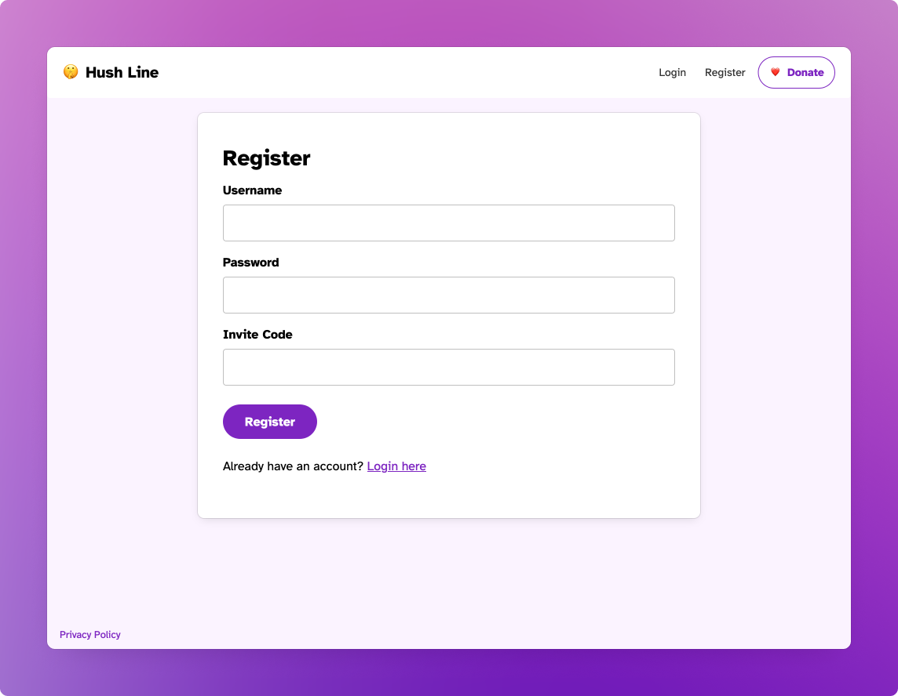Log In
After creating your account, you'll be redirected to the login page. Enter the username and password you just created.
Note: To protect your privacy, we don't require any PII, including your email address or phone number.
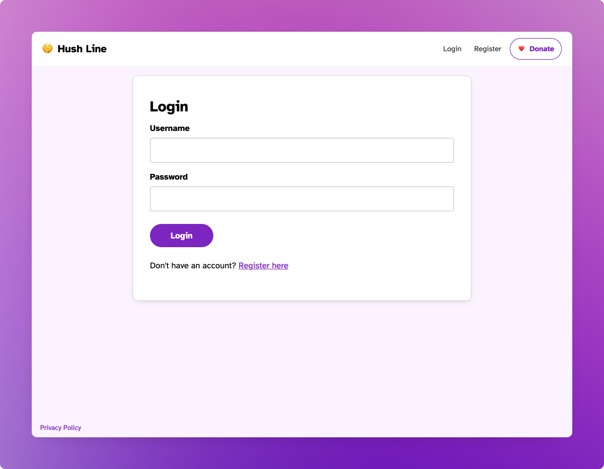Verified Accounts
At Hush Line, we're committed to building a trusted community where communication is secure and identities are verified. Our verified accounts feature is designed to ensure that messages reach their intended recipients, fostering a reliable environment for all users. Verified accounts are specially available for:
- 🕵️ Journalists - Reporters, correspondents, and investigative journalists.
- 📰 Newsrooms - Official accounts for newspapers, TV stations, or online news portals.
- ✊ Activists - Individuals or groups advocating for social, environmental, or political causes.
- 📸 Public Figures - Politicians or other noteworthy public individuals.
- 📊 Businesses - Companies, small businesses, or startups aiming to communicate with their audience.

Requesting Verification
To ensure your account is recognized as authentic, users belonging to the categories listed above can apply for verification. Follow these steps to initiate the verification process:
-
Send a Message: Use the contact form in the app to reach out to us. Include your name or organization's name and a preferred method of contact (email or phone number). We'll get back to you to schedule a verification meeting.
-
Prepare Your Documents: To verify your identity or your authority to represent an organization, please include the relevant documents for your role:
- A Valid ID: Government-issued identification that shows your full name and photo.
- Proof of Employment or Association: A letter from your employer or organization confirming your role or a recent pay stub.
- An Active Profile: A link to your profile on your employer's or organization's official website, verifying your position or role.
- Published Articles: For journalists, links to your articles published on recognized news websites.
- Proof of Authority: For those representing organizations, a document proving your authority to represent the organization, such as a power of attorney or a board resolution.
These documents help us ensure that verified accounts are granted to the rightful individuals or representatives of organizations.
-
Prepare Your Account: Verified accounts are required to use their public name or official organization name. For example:
| Category | Example |
|---|---|
| Individuals | Art Vandelay |
| Organizations | Vandelay Industries |
| Departments within an organization | Vandelay Industries, HR Dept. |
| Journalists | Art Vandelay, The Daily Worker |
| Independent Journalists | Art Vandelay, Ind. |
| Politicians | Sen. Art Vandelay, D-CA, 🇺🇸 |
| Gob Bluth, PM, 🇨🇦 |
Once your Display Name matches the format above, we'll promptly verify your account!
Safeguards
To help guard against abuse, our verification system is built so that if a verified user changes their username or display name, they'll lose their verified status and need to initiate the process again. This feature is intended to eliminate the risk of a user with a verified account changing their information to impersonate another person or organization.

Sending Messages
When you log in to your account, click on the "Submit Message" link at the top of the screen. You can publicly share the URL for this page wherever you're advertising your tip line. You'll notice some instructional text is only visible to you with suggestions for sharing your address.
You'll also see a message indicating if you've uploaded a PGP key. This will be visible to someone submitting a message, so if you'll receive sensitive information, it is advised to add your public PGP key in Settings.

When you share the address, someone sending a message will see slightly different text, with voice and tone directed at them.
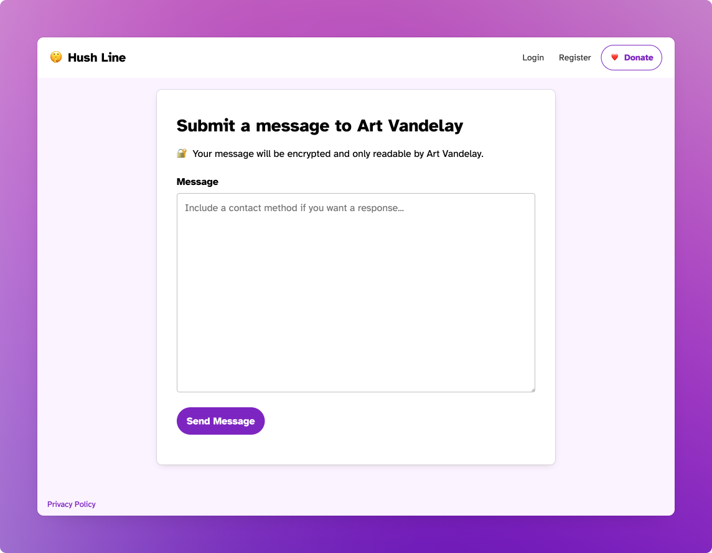If you haven't added a PGP key, you and any visitor will see a warning that messages will not be encrypted.
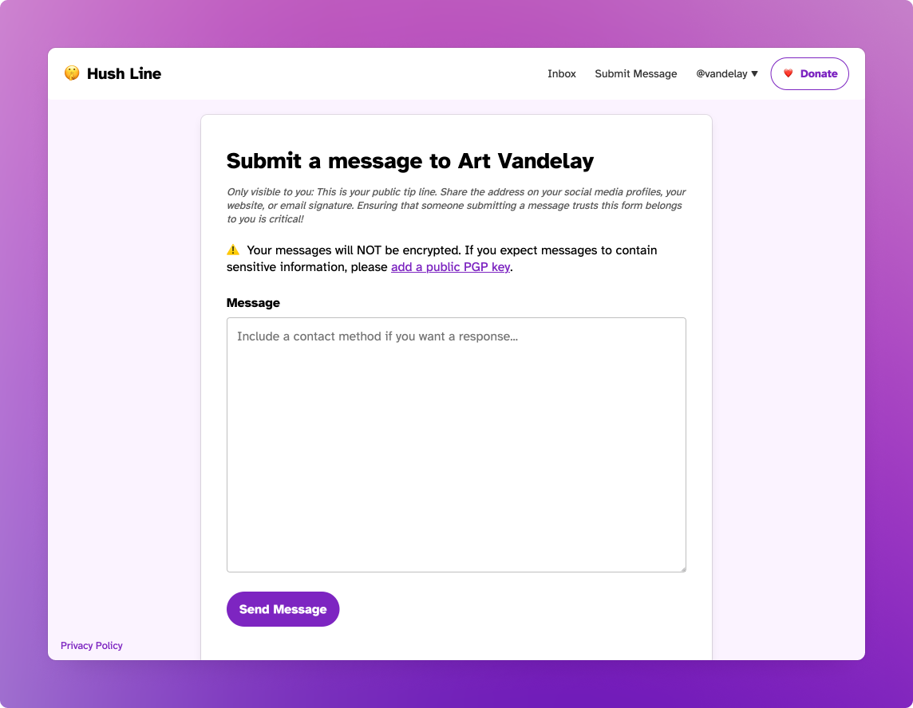Your IP Address
You'll notice an IP address displayed at the bottom of the submit message form. If you ARE NOT using Tor Browser or an anonymizing VPN and you're browsing from home, the address you see is most likely yours. It's trivial for a law enforcement agency to learn your exact identity from your ISP by simply subpoenaing for that information.
WHILE WE DO NOT LOG ANY IP ADDRESSES, if an attacker were actively monitoring connections to the site, they'd be able to see your address. In some cases, this might be enough to de-anonymize yourself. If you ARE using Tor, the observable IP address will belong to one of the thousands of possible addresses on the Tor network. And since there is no predictable way to determine the origin of a Tor connection, the IP address connecting to the site can not be linked back to you.
For these reasons, we highly recommend using the Tor Browser to help ensure your privacy.
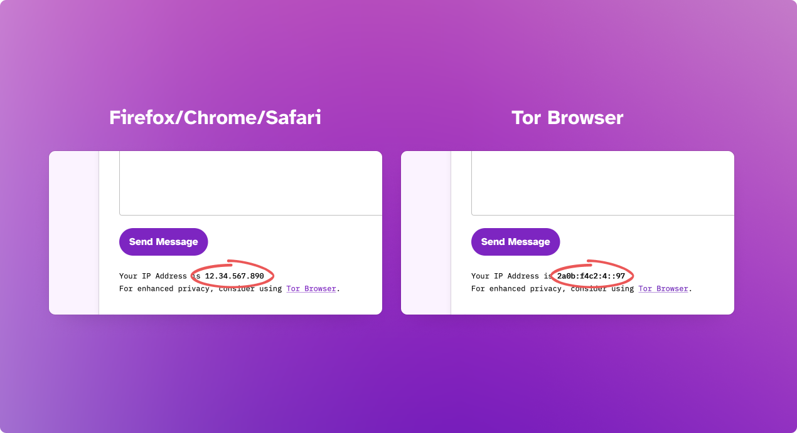Reading Messages
New users are greeted by their empty inbox.
When you receive a message, they'll appear here.
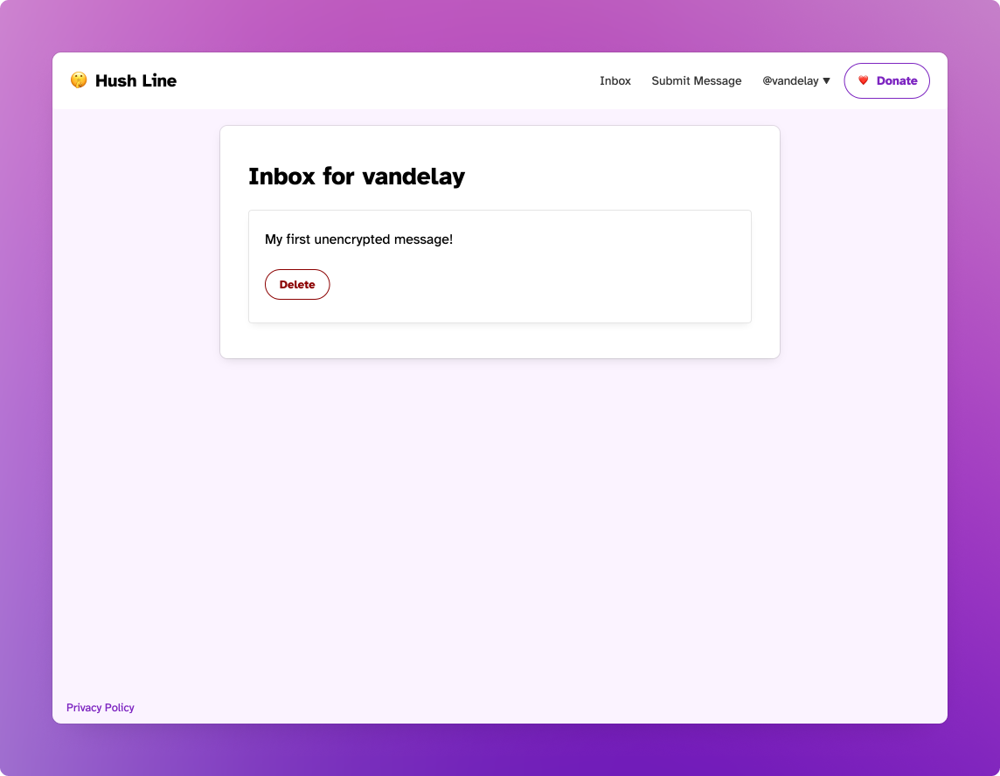Message Encryption
By default, Hush Line doesn't require a PGP key, but it's strongly encouraged. After adding your PGP key, only you can read the messages you receive.
As a baseline security measure, we encrypt your message content by default on our server. While this protects the contents of our database, if the encryption key becomes compromised, it can be decrypted. But if you add your PGP key, any message received will only be able to be decrypted by you. If you expect to receive messages containing sensitive content, enabling this feature is strongly encouraged.

Mailvelope
After installing the Mailvelope extension in your browser, you can decrypt your messages directly in the app. This is highly recommended, as it's one of the easiest and most straightforward methods of decrypting your messages.
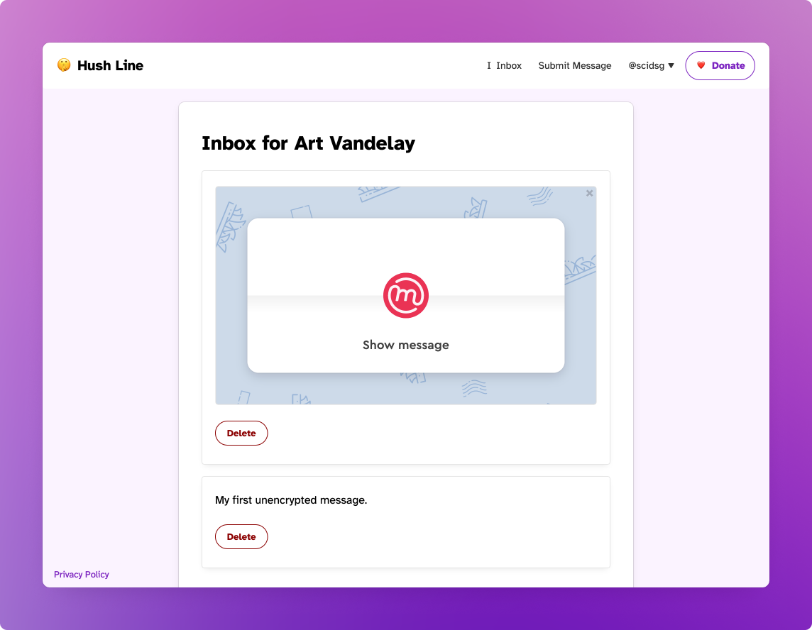You'll see a new interface where the encrypted message was. Click "Show message" to decrypt. You'll enter the password you created when setting up your PGP key, and the contents will be visible.

Settings
Profile Settings
Users can tailor Hush Line to their needs, from adding a display name to adding multiple usernames.
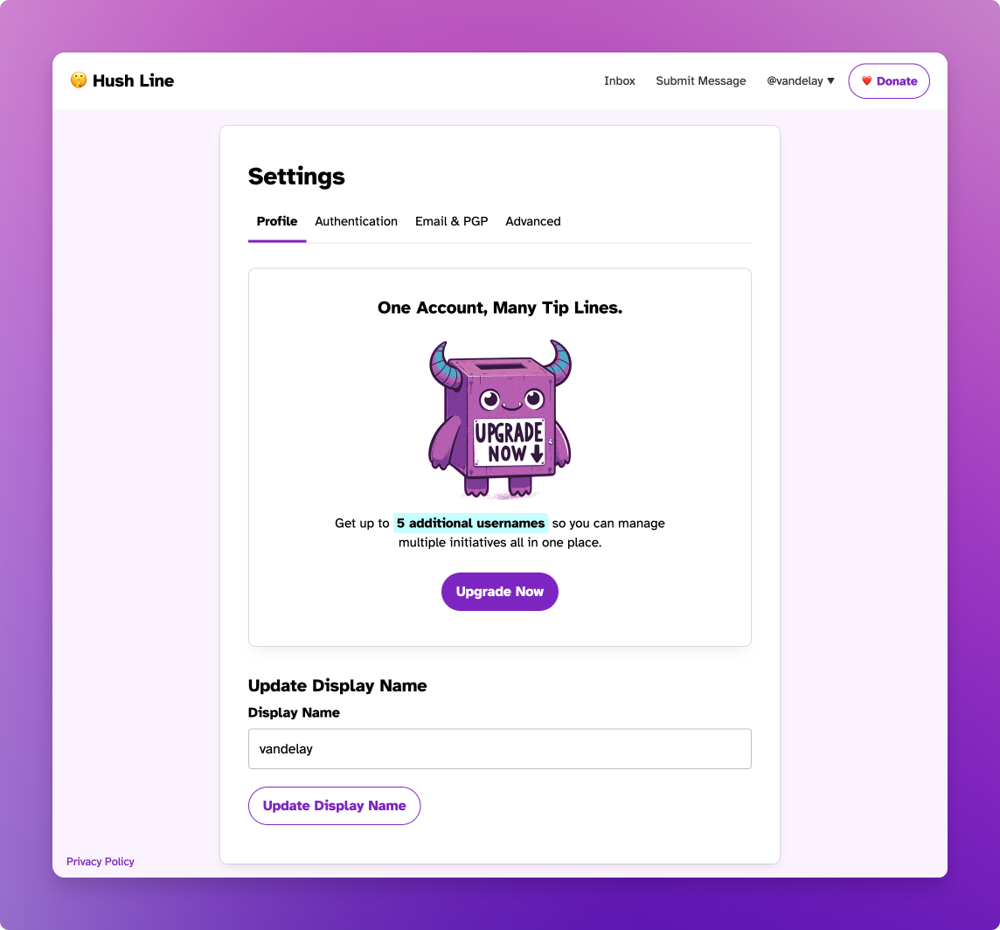Display Name
Users can set a human-readable display name so that someone submitting a message can see "Submit a message to Science & Design" rather than "Submit a message to scidsg".
Verification
As a security measure, if a user changes their display name after verification, they'll lose that status and must re-verify their account.
Authentication
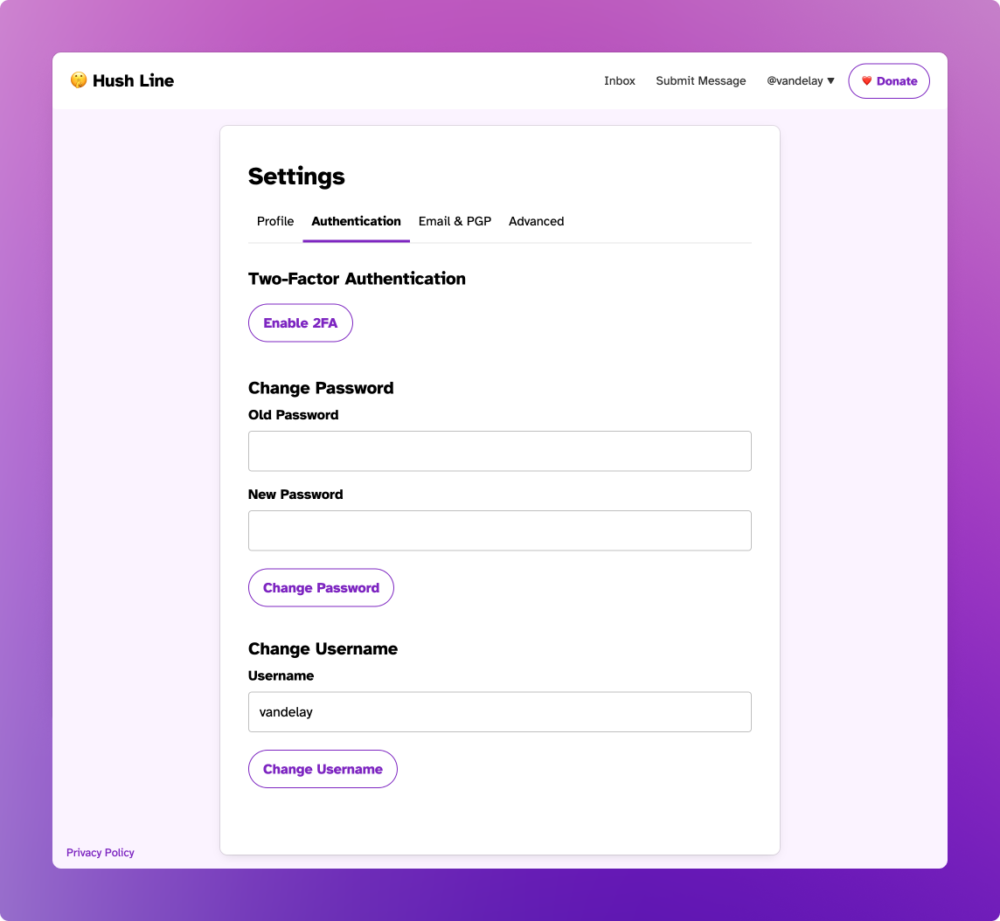Two-Factor Authentication
To improve account security, users can enable two-factor authentication, making account compromises, even in the event of a password leak, impossible.
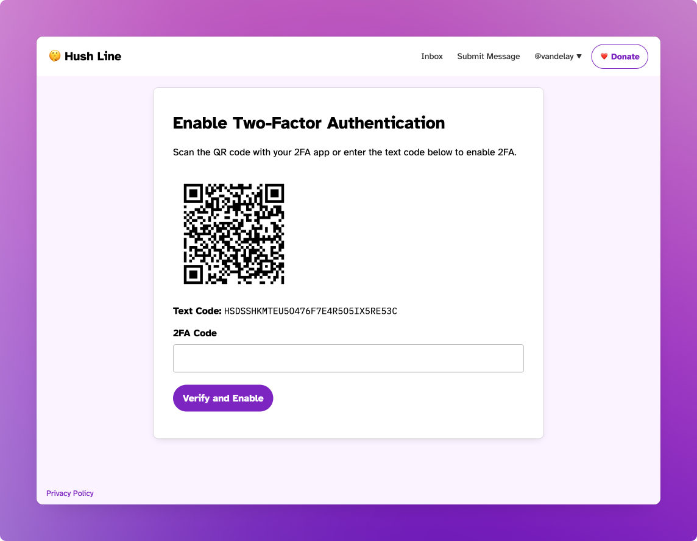Change Password
Users can change their password when needed.
Change Username
Changing your username is easy but can lead to confusion for end-users, especially for well-known organizations.
Verification
Like when changing your display name, when you change your username, you'll lose verification and need to go through the process again.
Email & PGP
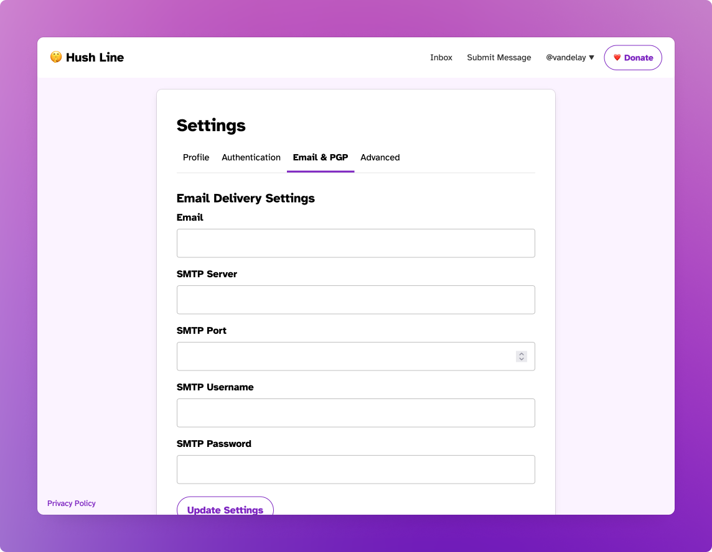Email Delivery
Users can have messages delivered to an email address and with the SMTP service of their choosing.
PGP
Users can opt to have their messages encrypted so they're only readable by them. This is a highly encouraged option, especially for journalists.
Advanced
Delete Account
Easily and permanently delete your account whenever you want.
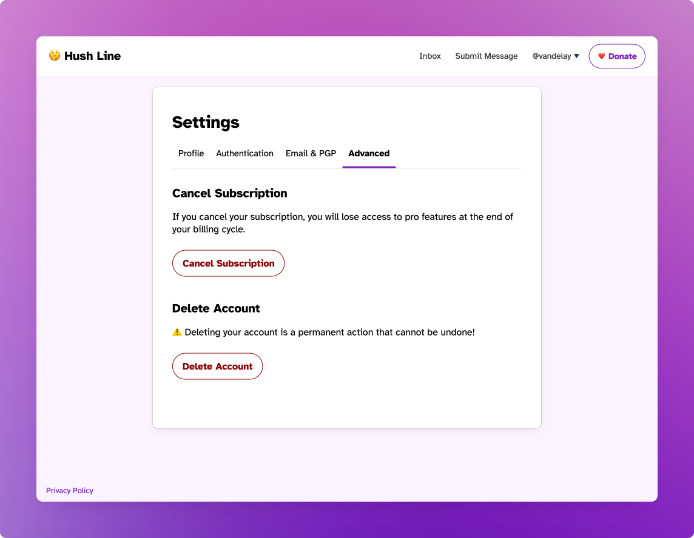Admin View
Admins can control certain aspects of user settings without having to log in to the server or manually modifying the database. This is where users are verified, where paid features can be manually enabled, or where admins can be created.
A highlight panel displays the total number of users and how many have enabled 2fa or added a PGP key. This view helps with internal decision-making, like education campaigns for security best practices.

Paid Features
Additional Usernames
Paid users can add up to five additional usernames. This feature aims to make it easy for organizational users to manage multiple initiatives from the same account. Newsroom editors can have lines for politics, cybersecurity, or world news desks; an educational institution can have lines for students, faculty, or community channels.
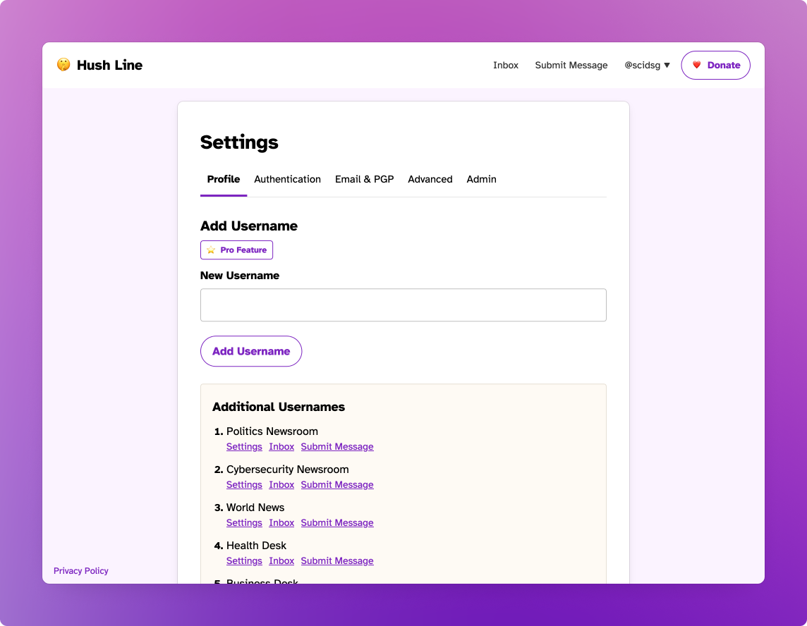Inbox
The account's primary inbox will aggregate and label messages in a single view.

Secondary Inboxes
Account owners can navigate to their secondary username's inboxes from the settings page.
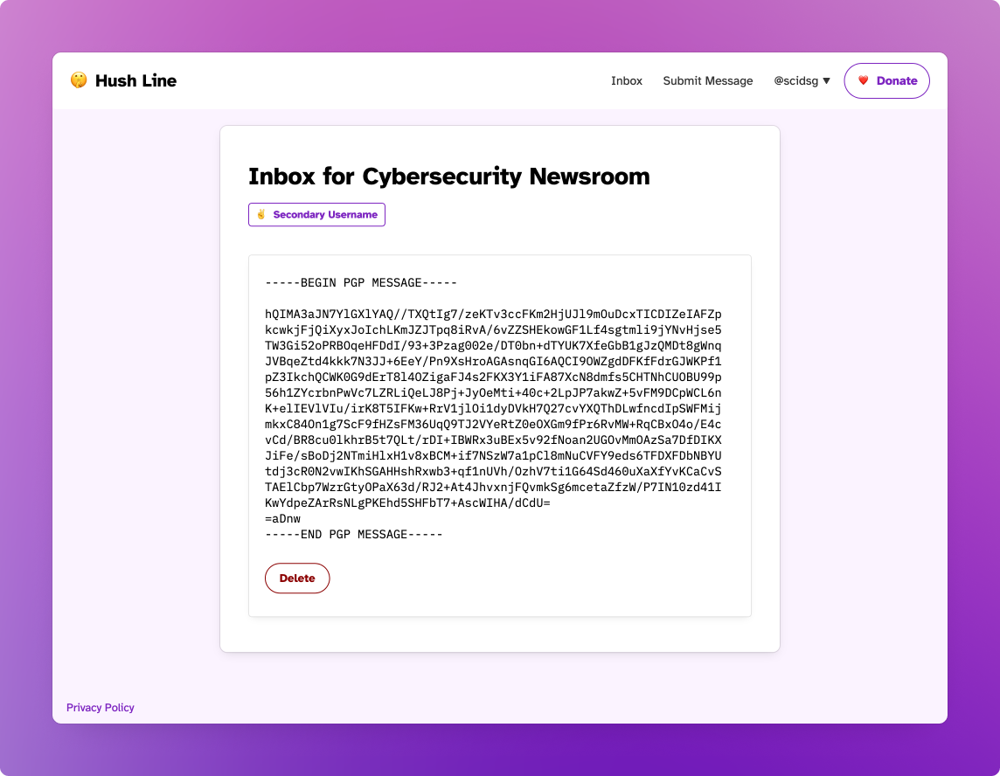Hush Line Personal Server
The Personal Server is a physical device running a Tor-only version of Hush Line. This is our customer-facing product that doesn't require a user to use the terminal or SSH to configure their tip line. It uses an e-paper display and web form to guide the user through the setup process, and in a matter of minutes, you can have an anonymous tip line deployed and ready to use.

1. Plug in ethernet
Before beginning, first plug in the ethernet. The Personal Server doesn't use wifi to help ensure high stability and availability.
The setup process will begin once an internet connection is detected.
2. Power up the device
Your server optimizes the setup time by coming with all of the necessary software preloaded on the device. When you power up the server, we update your software and Hush Line repository.
3. Wait ~5 mins for a setup code to display.
After the updates, your device's screen will display a QR code that links to a locally hosted web form.
4. Scan the code
Scan the code or visit https://hushline.local/setup from a device on the same network as your Hush Line Personal Server.
5. Add SMTP & PGP information
The form will ask for five pieces of information that we set up in the prerequisites.
👉 Make sure your public PGP key is unmodified, beginning with -----BEGIN PGP PUBLIC KEY BLOCK----- and ending with -----END PGP PUBLIC KEY BLOCK-----.
The information you'll need:
- SMTP email address
- SMTP address:
smtp.gmail.com - App password (from prerequisites)
- Port: 465
- Public PGP key (from prerequisites)
6. Email confirmation
You'll receive an encrypted email confirming your Hush Line Personal Server's successful installation. The email will include your address and a link to download Tor Browser.
7. Using Hush Line
Your screen will reset and display a QR code linking to a local information page intended for use by individuals interested in using your tip line. You can print this page, copy the content, email it, and post your Hush Line address on your social channels and website.
🎉 Congratulations! You've successfully set up your own anonymous tip line!
Hush Line Self-Hosted

In this section we'll get everything ready before installing Hush Line.
Raspberry Pi
- Download the Raspberry Pi Imager
- Flash a microSD card with Raspberry Pi OS (64-bit)
Raspberry Pi Prerequisites
Hardware
- Hardware: Raspberry Pi 4/3B+
- Power: Raspberry Pi USB-C Power Supply
- Storage: Micro SD Card
- SD Card Adapter: SD Card Reader
- Affiliate links
Prepping Your Pi
If you didn't know, your Raspberry Pi doesn't come with an operating system. Don't panic! We're going to install one now called Raspberry Pi OS.
1. Raspberry Pi Imager
Like a Macbook runs MacOS, and a Dell runs Windows, a Raspberry Pi runs Linux, which comes in many different flavors depending on your needs. Since we're using a Raspberry Pi, we'll use Raspberry Pi OS (64-bit), an operating system made just for the Pi. The Imager installs the operating system onto your microSD card, where we'll set up Hush Line. Download it from https://www.raspberrypi.com/software/.


Prep Your Card
2. Install Raspberry Pi OS
Open the Raspberry Pi Imager and click Choose OS > Raspberry Pi OS (other) > Raspberry Pi OS (64-Bit).
Insert your microSD card into your computer, and then click Choose Storage and select your card.

Before clicking Write, click on the Settings gear in the bottom right of the window. Configure the following settings:
- Hostname =
hushline - Enable SSH with password authentication
- User =
hush - Set a strong password
- Add wifi settings

Boot up and log in to Your Pi
3. Insert microSD Card
Take your SD card and insert it into your Raspberry Pi. You'll find the SD card slide on the bottom of the board, opposite the ethernet ports.
Plug the power supply into the device and let it boot up.
4. Log In
On a Mac, open Spotlight search by pressing CMD + Space. Enter "Terminal" and select the application with the same name.
Enter ssh hush@hushline.local, and when prompted, enter the password you created in the second step.

5. Update your system
The last thing we need to do is to update our system. First, we'll give ourselves admin priviledges, then perform the update:
Enter sudo su, then apt update && apt -y dist-upgrade && apt -y autoremove.

🎉 That's it, you're ready to get started with Raspberry Pi!
VPS
Prerequisites
In this section, we'll prepare to install Hush Line on a virtual private server (VPS). This means your Hush Line will run on a rented, private server owned by a company like Digital Ocean.
You'll need the following things:
- Debit or credit card
- Digital Ocean, or any other VPS provider
Digital Ocean
Digital Ocean is an infrastructure service provider that provides a cost-effective way to create your first virtual private server (VPS).
1. Create an Account
Go to digitalocean.com and create an account. You'll need to enter payment information before you can create a VPS.

2. Create a VPS
Digital Ocean calls their VPS option Droplets. To create a droplet click the green "Create" button at the top of the screen, the click "Droplets."

You can configure your server to your desired specifications, but for this guide, we'll choose the following options:
- Location: San Francisco
- Image: Debian 12
- Size: Basic
- CPU: Regular SSD @ $4/mo
Create a strong password, then click "Create Droplet."

After a minute or two, your Droplet should be ready. The "Resources" tab should be visible, and just below, you'll see the IP address for your Droplet.

3. Log In
On a Mac, open Spotlight search by pressing CMD + Space. Enter "Terminal" and select the application with the same name.
Enter ssh root@<IP Address>, and when prompted, enter the password you created in the second step.

4. Update your system
The last thing we need to do is to update our system. Enter apt update && apt -y dist-upgrade && apt -y autoremove.

🎉 Congratulations, you're now ready to install Hush Line on Digital Ocean!
Tor-Only Install
A Tor-only install is an excellent option for someone requiring anonymity and a high level of security, a journalist or human rights activist, for example.
1. Run The Installer
After logging in to and updating either your Raspberry Pi or VPS, enter the following command to start the installation process:
curl --proto '=https' --tlsv1.2 -sSfL https://install.hushline.app | bash

Choose "Tor-Only" at the first prompt for the installation type.

2. Add Email Information
Hush Line will send an email with the encrypted Hush Line message to the account you configure here. Since we're using Gmail, we'll need the following information:
- SMTP email address
- SMTP address:
smtp.gmail.com - App password (from prerequisites)
- Port: 465
- Public PGP key (from prerequisites)

Once the installation completes, you'll see a message that looks like this:
✅ Installation complete!
Hush Line is a product by Science & Design.
Learn more about us at https://scidsg.org.
Have feedback? Send us an email at hushline@scidsg.org.
• Hush Line is running
http://5450rww63n5yvp5xzojb41rcx63g3pwaig63ezwp×5x75igzh×4w6qyd…onion

3. Confirmation Email
You'll receive an encrypted email confirming your Hush Line's successful installation, which includes your address and a link to download Tor Browser.

🎉 Congratulations! You've successfully set up your own anonymous tip line!
Tor + Public Web Install
If you're someone using Hush Line for non-life-threatening scenarios - educators running a Hush Line for student reporting, or an employer for anonymous employee reporting - you might want to deploy to a public URL - one that will work in browsers like Chrome, Firefox, or Safari. We'll exclusively use a VPS.
1. Run The Installer
After logging in to and updating either your Raspberry Pi or VPS, enter the following command to start the installation process:
curl --proto '=https' --tlsv1.2 -sSfL https://install.hushline.app | bash

Choose "Tor + Public Domain" at the first prompt for the installation type.

2. Add Information
Hush Line will email the encrypted Hush Line message to the account you configure here. You'll also need to purchase a domain name for your Hush Line. We'll need the following information:
- Domain name
- SMTP email address
- SMTP address: smtp.gmail.com
- App password (from prerequisites)
- Port: 465
- Public PGP key (from prerequisites)

3. Configure DNS
Now, we need to point your domain name to your new Droplet. When the installer reaches the final step, it will display the exact information that you need to enter in your domain's DNS settings.

Once the installation completes, you'll see a message that looks like this:
✅ Installation complete!
Hush Line is a product by Science & Design.
Learn more about us at https://scidsg.org.
Have feedback? Send us an email at hushline@scidsg.org.
● Hush Line is running
https://ourdemo.app
http://jnaoywuss3dbgrmroeoqtsjymzf46in7lzh3bx6nwv3bzvwmhdvqytad.onion

4. Confirmation Email
You'll receive an encrypted email confirming your Hush Line's successful installation which, includes your addresses and a link to download Tor Browser.

🎉 Congratulations! You've successfully set up your own public anonymous tip line!
Information Page
Hush Line deploys with an information page that provides the sender with additional information that might be helpful before submitting a message.

When to use Hush Line
We've leaned on the guidance from Whistleblower.org and included some information from their resources for when to use a tip line. They include when you have evidence of wrongdoing, including:
- a violation of law, rule, or regulation,
- gross mismanagement,
- a gross waste of funds,
- abuse of authority, or
- a substantial danger to public health or safety.
Hush Line addresses
If you deployed to a public domain, you'll find both your onion address and public website listed here.
Share it!
The information on this page can be shared and the link to the page itself should be posted in multiple locations to make it easy to verify. You can:
- print the page and place it in common areas,
- copy the info and email it broadly,
- add the info link on your website and social channels, and
- add the link in your email signature.
Verify your address!
Before you trust any link, whether an onion domain or a public website, you should verify its address. We encourage Hush Line operators to post their address in at least three different locations - social media, website, and email signature, for example - so individuals sending a message can verify they have the correct address before visiting and sharing potentially sensitive information.
Sending Messages
For someone in your community to send you a Hush Line message, they just need to go to one of your addresses and enter their message.
1. Tor
If you chose a Tor-only deployment, you should have seen an output like this after installation was completed:
✅ Installation complete!
Hush Line is a product by Science & Design.
Learn more about us at https://scidsg.org.
Have feedback? Send us an email at hushline@scidsg.org.
• Hush Line is running
http://5450rww63n5yvp5xzojb41rcx63g3pwaig63ezwp×5x75igzh×4w6qyd…onion
This information should also be in the confirmation email you received upon successfully setting up your Hush Line.
Open up Tor Browser and paste your onion address in the address bar. Tor is a little slower than regular internet, so it'll take a few seconds before your site loads.

2. Public Websites
If you deployed Hush Line to a public website, you should have seen an output like this:
✅ Installation complete!
Hush Line is a product by Science & Design.
Learn more about us at https://scidsg.org.
Have feedback? Send us an email at hushline@scidsg.org.
● Hush Line is running
https://ourdemo.app
http://jnaoywuss3dbgrmroeoqtsjymzf46in7lzh3bx6nwv3bzvwmhdvqytad.onion
In the example above, the first and last addresses can load in regular browsers like Chrome, Firefox, or Safari. The onion-only address needs Tor Browser to load.

Reading Messages
When someone sends you a Hush Line message, it'll get delivered to the email account you configured during installation. Messages will have the subject line "🤫 New Hush Line Message Received."
Gmail + Mailvelope
When you click on your Hush Line message you might be prompted to enter your Mailvelope password. Recall that this is the password we set up in our prerequisites.


🎉 Congratulations! You're ready to go! If you have any questions, please send questions to hushline@scidsg.org.